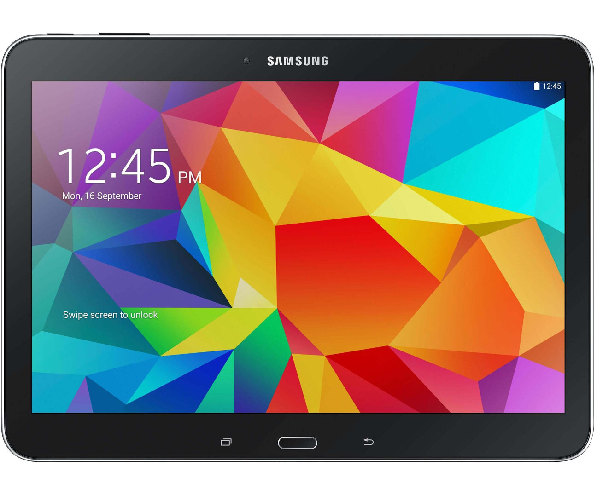

Samsung Galaxy Tab 4 10.1 Wi-Fi (samsung-matissewifi)
|
 Manufacturer's image of Samsung Galaxy Tab 4 10.1 Wi-Fi | |
| Manufacturer | Samsung |
|---|---|
| Name | Galaxy Tab 4 10.1 Wi-Fi |
| Codename | samsung-matissewifi |
| Model | SM-T530 |
| Released | 2014 |
| Category | testing |
| Pre-built images | no |
| Original software | Android |
| Original version | 4.4.2 |
| Extended version | 5.0.2 |
| postmarketOS kernel | 3.4.0 |
| Hardware | |
| Chipset | Qualcomm Snapdragon 400 (APQ8026) |
| CPU | 4x 1.2 GHz Cortex-A7 |
| GPU | Adreno 305 |
| Display | 1280×800 px, 10.1" in (26 cm) diagonal, WXGA TFT display (LCM: smd_ltl101al06, touchscreen: atmel_mxt_1188s) |
| Storage | 16/32 GB flash memory, microSDXC slot (up to 64 GB) |
| Memory | 1.5 GB |
| Architecture | ARMv7 |
| Type | tablet |
{kind=link}
| USB Networking |
Works
|
|---|---|
| Flashing |
Works
|
| Touchscreen | |
| Display |
Broken
|
| WiFi | |
| FDE | |
| Mainline |
Works
|
| Battery | |
| 3D Acceleration | |
| Audio | |
| Bluetooth | |
| Camera | |
| GPS | |
| Internal storage | |
| USB OTG | |
| Accelerometer | |
|---|---|
| Hall Effect | |
| Power Sensor | |
| Ir TX | |
|---|---|
| Ir RX | |
| Memory Card | |
| Haptics | |
| FOSS bootloader |
Broken
|
| Won't work with SM-T533 and SM-T536 models. |
Contributors
Maintainer(s)
Users owning this device
How to enter flash mode
- Hold Power+Volume Down+Home while powering up the device.
- Press Volume Up to enable flashing.
Installation
$ pmbootstrap init
$ pmbootstrap install
$ pmbootstrap flasher flash_rootfs
$ pmbootstrap flasher flash_kernel
Near-mainline Status
For the status of all components in the near-mainline codebase being used, see below:
| Component | Part number | Works? | Notes |
|---|---|---|---|
| Chipset | Qualcomm Snapdragon 400 | Y | |
| Graphics | Adreno 305 | N | Untested, but should work with the Adreno 330 firmware. Pending proper panel support. |
| eMMC (16GB) | Y | ||
| Charging IC | SMB358 | N | |
| PMIC | PM8226 | N | See this issue |
| Micro-USB IC | SM5502 | P | USB-OTG not supported yet. |
| Audio | WCD9306 | N | Requires codec support |
| Touchscreen | PMXT1188S1 | Y | |
| Buttons | gpio-keys | Y | Volume up/down, power and home button. |
| WiFi, Bluetooth | WCN3660A | P | Bluetooth works, WiFi scanning doesn't work without disabling hardware scanning, which is a hack that should be fixed. |
| Display Panel | |||
| Backlight | LP8556TMX-E09-S7003056 | Y | |
| Front Camera | Siliconfile SR130PC20 | N | |
| Rear Camera | Siliconfile SR352 | N | |
| GPS | WGR7640 | P | Driver support implemented, but ModemManager doesn't support WiFi-only devices & gpsd is awaiting gpsd!139. |
| Hall effect/flip cover sensor | S-5712CCDL1-I4T1U | Y | Connected via GPIO. |
| Accelerometer | STMicroelectronics K2HHTR | Y |
See also
- pmaports!560 Initial merge request
- Kernel source
- TWRP (dead link? but unified samsunggalaxytab4101 page exists!)
- Specs on Wikipedia
- Specs on deviceinfohw.ru
- Device package
- Kernel package